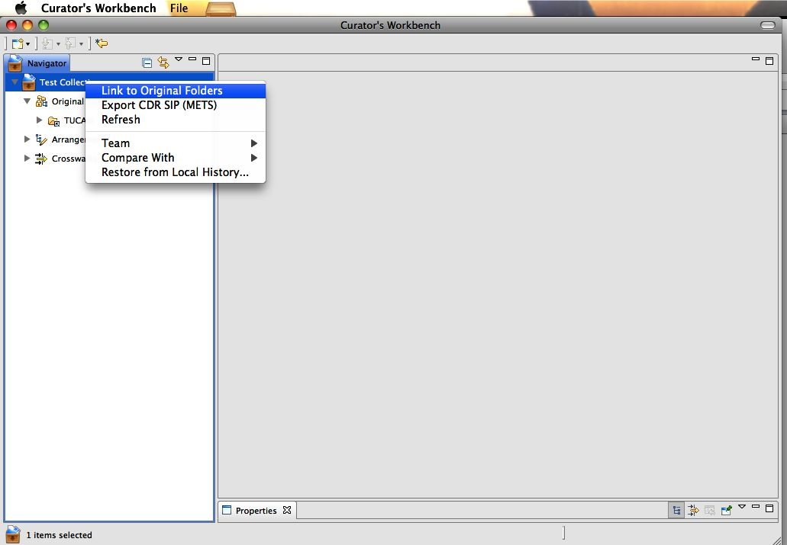

Adding Original Folders to a Project
After you have created a project and are ready to add files, you will
be linking to original folders (see Figure 2). When you link to
folders, they are not imported or moved into the software. We�ll get
to that later.
- Using the navigation view on the left, right-click (or
alt-click on Mac) on the project name or on the "Original Folders"
section.
- From the context menu, choose "Link Originals".
- Choose the file system type, either a "Local Folder" or an
"iRODS Collection". In many cases you will choose a local folder.
- Press the "Select" button and browse to the folder that you
want.
- When you have found your folder and pressed "Okay", you will
find that the folder is now linked within the "Original Folders"
section.
In the Original Folders section you can safely explore the collected
files without worrying about inadvertently modifying them through an
accidental drag and drop or delete action. Hidden files are also shown.

Figure 2. Linking to original folders on a drive.